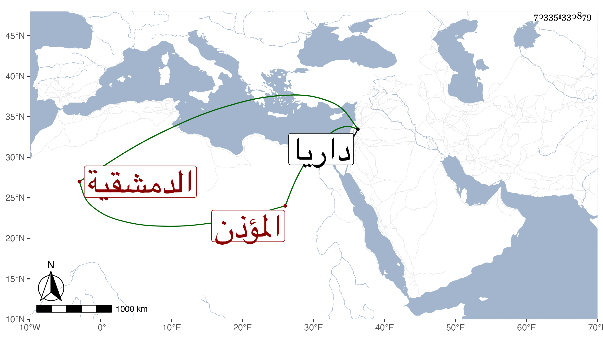

0902Sakhawi.DawLamic.ITO20230111-ara1.EIS1600.703351330879
Biography ID: 703351330879
132
خاتون ابنة محمد بن أحمد بن محمد بن النبيه أم محمود وعبد الرحمن الدارانية ثم الدمشقية المؤذن والدها بداريا وتعرف ببنت الفقيه وببنت المؤذن . سمعت بداريا علي عبد الوهاب بن أبي العلاء بن أبي المكارم منتقى من الثاني من حديث عيسى بن حماد زغبة عن الليث وحدثت . ذكرها شيخنا في القسمين من معجمه وقال أجازت لنا باستدعاء التقي الفاسي في ربيع الأول سنة سبع وتسعين انتهى . وتأخرت حتى لقيها ابن موسى والابي فسمعا منها المنتقى المذكور في سنة خمس عشرة .
